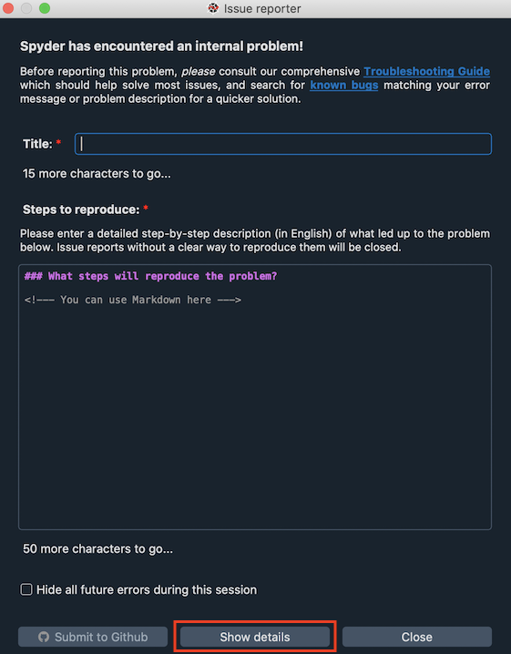

Primeros Pasos#
Si Spyder se bloquea o recibes un mensaje de error, por favor lee los siguientes pasos de solución de problemas antes de abrir uno nuevo. Hay una buena posibilidad de que alguien más ya haya experimentado el mismo problema, así que comprobar si ya hay una solución existente probablemente hará que Spyder vuelva a trabajar para ti lo más rápido posible.
Importante
Para asegurarte de que estás recibiendo la ayuda más relevante para tu problema, por favor asegúrate de que el problema está realmente relacionado con Spyder:
Si el problema parece ser el resultado de tu propio código, Stack Overflow es un mejor lugar para empezar.
Si el error también ocurre en los entornos estándar de Python, IPython, o QtConsole, o solo con un paquete específico, es poco probable que sea algo en Spyder, y deberías reportarlo a esas fuentes en su lugar.
If the problem lies with your specific install, uninstalling and reinstalling with Spyder’s Instaladores independientes will likely fix it. As the other methods of installing Spyder can result in tricky user-specific problems, we generally aren’t able to give individual support for most install issues related to those.
Just like the programs you code in it, Spyder is written in Python, so you can often figure out many problems just by reading the last line of the traceback or error message. To view it, click Show details in the Spyder error dialog.

Often, that alone will tell you how to fix the problem on your own–but if not, we’re here to help.
Donde buscar ayuda a partir de aquí#
Si revisas nuestra lista de categorías de incidencias y descripciones de problemas y ves una pregunta, mensaje de error o seguimiento te resulte familiar, es probable que la subsección correspondiente te brinde la ayuda más específica para resolver tu problema rápidamente.
As a first step to solving your issue, you can try some Primera ayuda básica.
If Spyder won’t launch, check the Kit de emergencia section and see if that clears it up.
If your problem is related to the kernel not starting, autocompletion or a plugin go to Problemas comunes section.
If you still can’t get it to work, and the problem is indeed Spyder-related, you should consult the the Pedir ayuda section for other resources to explore.
Finally, if you couldn’t solve your problem and want to submit an issue to our GitHub issue tracker, so the bug can hopefully be fixed for everyone, Enviar un reporte.